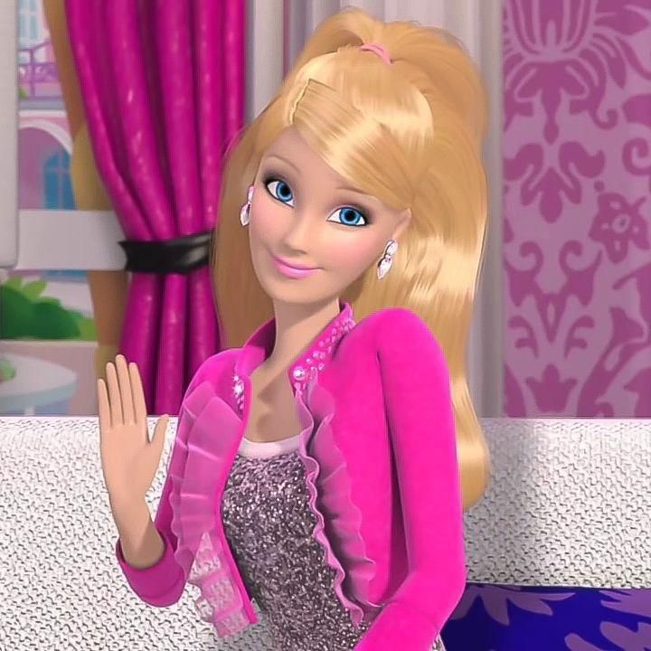

.jpg)
Bem vindo ao site
Se divirta!!!

5 filmes/séries para você conferir:

Gossip Girl é uma série de televisão americana que narra a vida de adolescentes ricos e privilegiados do Upper East Side de Manhattan, em Nova York, através do olhar de uma blogueira anônima conhecida como "Gossip Girl".

Mean Girls é uma comédia adolescente de 2004 que satiriza a vida no ensino médio e as disputas entre grupos populares.

The Vampire Diaries é uma série de drama sobrenatural que mistura romance, mistério e ação em torno da cidade de Mystic Falls. A trama gira em torno de Elena Gilbert e dos irmãos vampiros Stefan e Damon, entre amores, segredos e forças sombrias.

Pretty Little Liars é uma série de suspense e mistério que acompanha quatro amigas atormentadas por mensagens anônimas de alguém chamado “A”. Entre segredos, mentiras e reviravoltas, elas tentam descobrir quem está por trás das ameaças.

Aquamarine é um filme de fantasia e comédia que conta a história de uma sereia que aparece em uma piscina após uma tempestade. Ela faz amizade com duas adolescentes e, juntas, vivem aventuras em busca do verdadeiro amor.